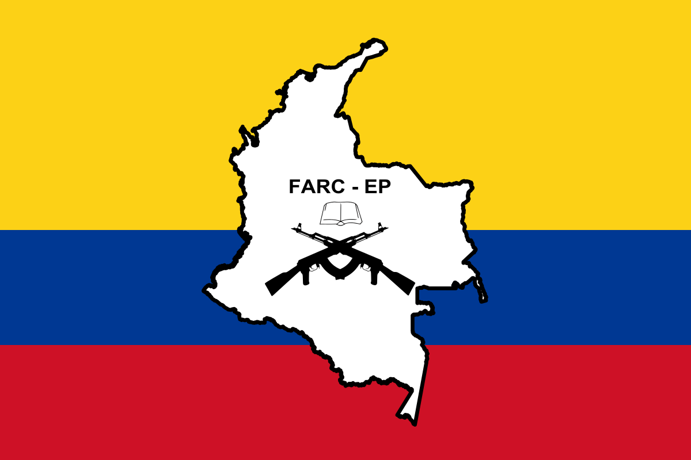

FARC/Colômbia

FARC-EP → Forças Armadas Revolucionárias da Colômbia, Exército do Povo, é um grupo de guerrilha armada rural criado nos anos 60, especificamente em 1964, que busca sua transformação social por meio do treinamento armado na zona rural.
Contexto Histórico → Quando as ditaduras da América Latina começaram a surgir, ápice da Guerra Fria, com o mundo dividido em Capitalismo (EUA) e Socialismo (URSS). O Socialismo veio a ser representado por Cuba (revolução cubana). Quase todos os países latinos tinham guerrilhas armadas. A FARC é uma organização Marxista e Leninista que, desde sua fundação, procura implementar o socialismo através da luta armada na Colômbia. Até os anos 90 ela teve muita força, já que nessa época possuía como membros cerca de 40% do território da Colômbia. Até o começo dos anos 2000, ela atuou com aproximadamente 16 mil membros. Atualmente ela diminui, tendo cerca de 8 mil pessoas.
Estratégias → Uma das principais estratégias da FARC-EP, além do treinamento armado e da conquista de mais membros, foi o sequestro de políticos de esquerda para libertá-los. O que resulta numa guerra civil entre o Exército Nacional Colombiano e a FARC e outros grupos (cerca de 250 mil pessoas morreram por razão direta ou não dessa guerra civil).
Narcotráfico → Apesar de negar, a FARC é, até hoje, acusada de ter relação com o narcotráfico, porém isso nunca foi confirmado. Há casos de fuga na Floresta Amazônica: Estrangeiros suspeitos de ligação com uma dissidência das antigas Forças Armadas Revolucionárias da Colômbia (Farc) estão entrando em território brasileiro atraídos pelo avanço do garimpo ilegal de ouro no Brasil nos rios da Amazônia. A informação consta de documentos obtidos pela BBC News Brasil e foi confirmada pela Polícia Federal. (Guerrilheiros colombianos atravessam fronteira por garimpo ilegal na Amazônia | Mundo | G1 (globo.com))
Tratado de Paz → O tratado de paz tem como objetivo a FARC deixar de ser uma guerrilha armada e tornar uma organização política constitucional, ou seja, legalizada e com o poder exercido pela democracia. Esse tratado de paz teve várias tentativas de implementação, elas foram feitas com o apoio da igreja, mas a FARC negou, já que a igreja, além de pedir que elas entregassem as armas, impedia um de seus objetivos, a igualdade de gênero e a diversidade sexual, afirmavam que seria um desrespeito à família tradicional. Os Uribistas também tentaram, mas não conseguiram, já que eles não queriam que os membros da FARC, que cometeram crimes políticos, fossem anistiados, ou seja, teriam perdão.
Plebiscito Nacional → Proposta de acordo de paz entre o Governo da Colômbia e a FARC, com a maioria dos votos, o acordo não foi aprovado.
História da Colômbia → A região que hoje compõe a Colômbia era habitada por índios até o final do século XV, quando chegaram os espanhóis. Os movimentos de independência tiveram início no século XVIII.
Em 1821, foi formada a Grã-Colômbia, que era constituída pelos atuais países: Venezuela, Colômbia, Panamá e Equador, que eram liderados por Simón Bolívar.
Lentamente, os países foram se separando até que, em 1903, tornaram-se quatro países. Por aproximadamente um século, o poder na Grã-Colômbia dividiu-se entre os partidos Conservador e Liberal, e a rivalidade entre eles desencadeou uma guerra civil.
Já no ano de 1948, houve o assassinato de um líder liberal, o que gerou distúrbios em Bogotá (o Bogotazo) que se espalharam pelo país, resultando em milhares de mortes. Com isso, tanto os liberais quanto os conservadores decidiram fazer um compartilhamento do poder.
No entanto, os ex-combatentes liberais instituíram as Forças Armadas da Colômbia (Farc) em 1964. Nos anos seguintes, foram fundadas outras organizações, como: Exército de Libertação Nacional (ELN) e o Movimento Revolucionário 19 de Abril (M-19), o que resultou na expansão da guerra civil. Na década de 1980, começou uma vasta produção de cocaína. A Colômbia atualmente é responsável por 79% da produção mundial de cocaína.